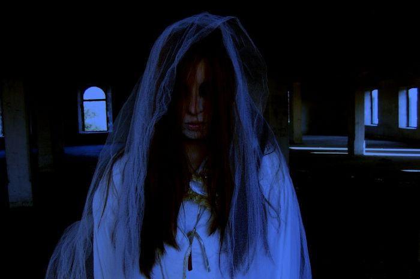
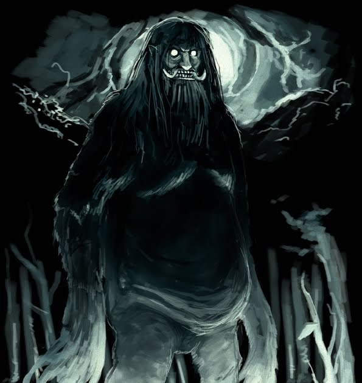

Kuntilanak

Kuntilanak (bahasa Melayu: pontianak atau puntianak) atau sering disingkat kunti adalah hantu yang dipercaya berasal dari perempuan hamil yang meninggal dunia atau wanita yang meninggal karena melahirkan dan anak tersebut belum sempat lahir. Nama "puntianak" merupakan singkatan dari "perempuan mati beranak". Mitos ini mirip dengan mitos hantu langsuir yang dikenal di Asia Tenggara, terutama di Nusantara. Mitos hantu kuntilanak sejak dahulu juga telah menjadi mitos yang umum setelah dibawa oleh imigran-imigran dari Nusantara.
wiki
Pocong
Pocong adalah sejenis hantu yang berwujud guling. Di Malaysia, hantu semacam ini dikenal pula sebagai hantu bungkus. Pocong juga dikenal sebagai hantu kafan. Pocong adalah hantu yang konon merupakan arwah orang mati yang terperangkap dalam kafan mereka.
wiki
Genderuwo

Genderuwo (dalam pengucapan bahasa Jawa: "Genderuwo") adalah mitos Jawa tentang sejenis bangsa jin atau makhluk halus yang berwujud manusia mirip kera yang bertubuh besar dan kekar dengan warna kulit hitam kemerahan, tubuhnya ditutupi rambut lebat yang tumbuh di sekujur tubuh. Genderuwo dikenal paling banyak dalam masyarakat di Pulau Jawa, Indonesia. Orang Sunda menyebutnya "gandaruwo" dan orang Jawa umumnya menyebutnya "gendruwo".
wiki